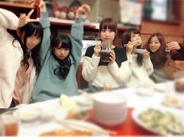

| 2013/12 23 Mon | 漬けすぎたメンマ。 529回目 |
昨日は
MUSIC FOR ALL,
ALL FOR ONE 2013
がありました！
今回も出演できて嬉しかったです。
衣装は武道館でも着たサンタ衣装
みさはポニーテール
まりかはツインテール
来てくださったみなさん
ありがとうございました！
サイリウム見えたーーーーー

みんなでご飯たべたよー
楽しかったぜー
いくちゃんはご飯のことになると
本当に表情が豊かだー
そして今日は名古屋全握
月の大きさのfull踊ったよ

ペアは若月と！

ちょんまげびょーん
わかちゅいんにドキドキだったぜー！
楽しみにしてたの！
喉をやられてしまいまして...
ちょっと声が変わってましたが
team*若月のみなさん
優しく握手してくださって
ありがとうございました！
まりっ会のみなさん
いつも通り握手してくれて
ありがとうございました。
さっさと治さな！
みなさんも風邪に
気をつけてくださいね。
失いたくないからでの
くまのぬいぐるみに帽子被せたのは
アドリブですかー？
▶︎そうですー
曲終わりに被ってたニット帽を
落としてしまったの。
くまのぬいぐるみに被せて
なんとか乗り越えたよ。
武道館の感想については
他の星からのダンスと
失いたくないからの服装が好評！
白のポンチョに白のニット帽だった。
ポンチョって男の人が
すきそうなイメージ
明日クリスマスイヴだね。
みんななにするん

まりか
コメント(423)
2013/12/23 20:06